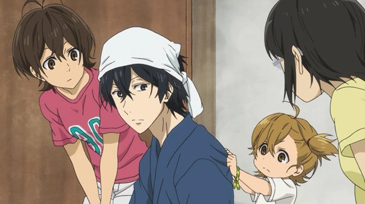

"Barakamon" is about the stresses of work and art in modern society, and how an old-fashioned way of living can help cleanse the soul. It's not an uncommon theme, but it is unusual in anime: there are no robots or sexy magical girls here. In this case, the theme is portrayed through Handa, a Japanese calligrapher, who physically attacks a judge when his entry loses a prestigious contest. To control his anger issues, his father sends him out to the boonies, to the remote Goto Island. There, Handa tries to calm himself, taking advantage of the peace and quiet to continue practicing his art.... at least that's what he hoped to do. The rural town lacks most of the ammenidies he's used to (he was stranded at the airport when he first arrived, with not a taxi in sight), and the locals are a bit eccentric. In particular, the children are a bit too nosy and energetic. One girl in particular, 7-year-old Naru, torments Handa constantly to play with her, not respecting his wish to be left alone. Add in curious teenagers who don't often meet people from "the city," and well-meaning elders, and the dry and sour young-man named Handa will have his hands full. But these distractions might be exactly the type of inspiration he needs to remind himself to enjoy life, and might inspire him to go beyond his limitations in his craft.Admittedly, having caligraphy at the center of the plot was a weak point to me. Yes, Japanese caligraphy is beautiful, as is the characters they use in their written language. But to call a single large page with a single word "art" is a bit of a stretch, and its hard to imagine anyone making a living, let alone reaching fame, for writing something with either a clean or expressive stroke (realistically, the act takes barely two seconds to make). Your own appreciation of this visual poetry will factor into how much you enjoy "Barakamon," even if the theme is universal across all art.The breezy show tries to be entertaining through its humor. And there is plenty of fun to be had, from physical cartoon gags, to the crazy dialogue that comes out of the mouths of the kids, to Handa's straight-man reactions. But even this gets old after a while. Like the setting itself, "Barakamon" is a show to lay back and get comfortable with, but not as engaging or bold or as funny as it ought to be. The greatest achievement is ultimately the character growth Handa goes through, which is inspiring to watch, even if it leads to a predictable end. Perhaps that's why a spin-off high-school-set series, simply called "Handa-kun," was made: even though Naru might be the most memorable poster-child for the series, Handa is the real heart behind it. Production values are solid, ultimately slightly better than average. Again, sparing use of exaggerated cute and cartoonish animation helps make the show a little more dynamic. The English dub is good, although I wasn't convinced by the adult actors behind the children. Ultimately, "Barakamon" is a sweet show with an important message. But anime in this genre are always difficult for me to judge... I can't help but simply shrug and say "it's good." You have to be in a certain mood to fully appreciate it. Low-key is the perfect way to describe the show, and that was always its point: there's nothing wrong with not being the best or loudest in the room. In my case, if I get writers-block, or struggle to ponder why I make art at all, "Barakamon" might be exactly the show to rewatch to make me feel a little better.
- "Ani" More reviews can be found at : https://2danicritic.github.io/ Previous review: review_Balto Next review: review_Barefoot_Gen